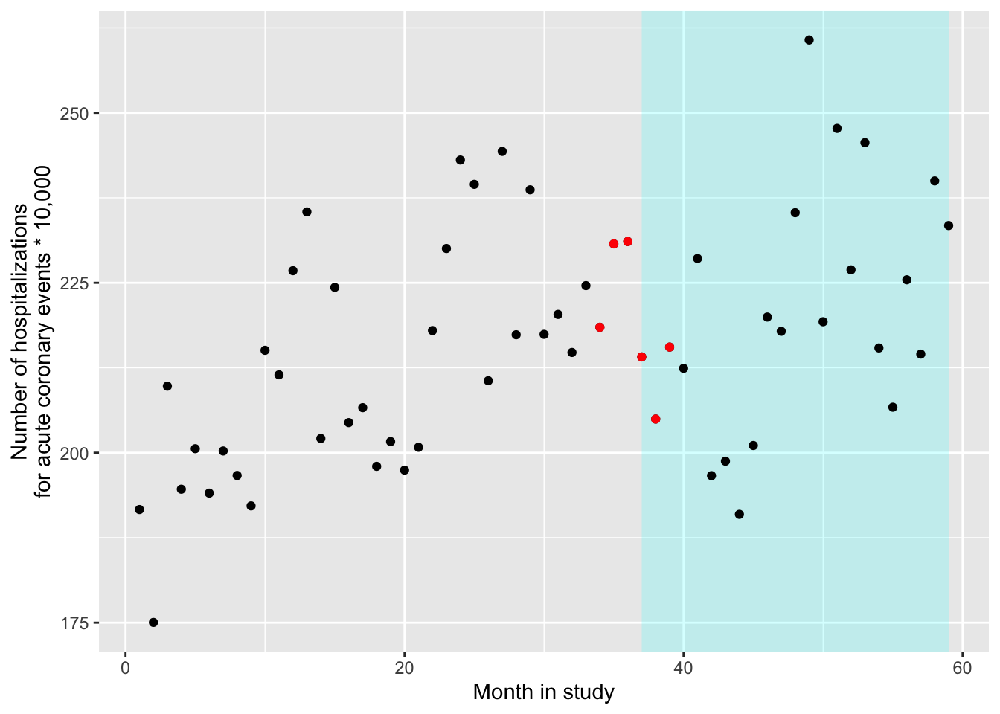
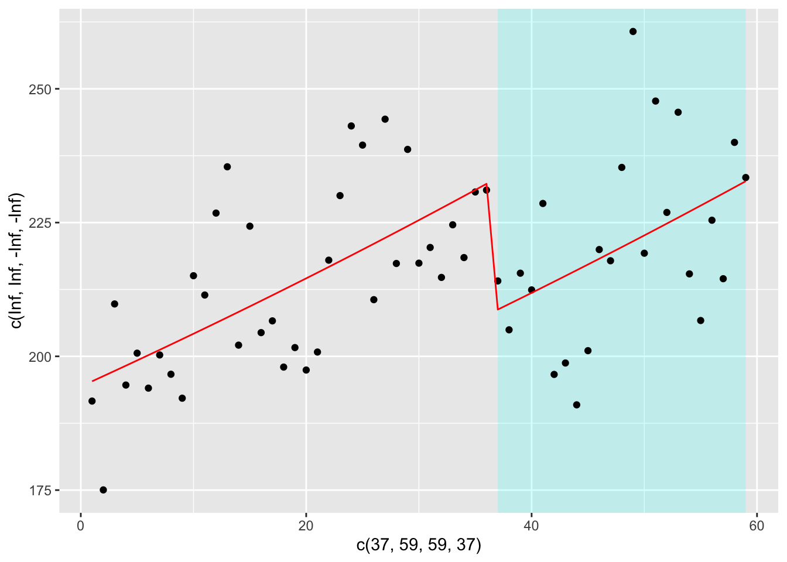

Chapter 5 Natural experiments
5.1 Readings
The readings for this chapter are:
- Bernal, Cummins, and Gasparrini (2017) (on interrupted time series), with a correction to an equation in the paper at https://academic.oup.com/ije/article/49/4/1414/5900884. Example data and R code for the paper are available to download through a Supplemental Appendix. (Also, note that there is a correction of one of the statistical model equations in this paper, given at the same web address.)
- Bor et al. (2014) A systematic review of regression discontinuity designs in epidemiological research
- Lopez Bernal et al. (2013) An example of an epidemiological study that uses an interrupted time series study design. Includes a nice discussion of strengths and limitations of the study design.
The following are supplemental readings (i.e., not required, but may be of interest) associated with the material in this chapter:
- Barone-Adesi et al. (2011) The scientific paper highlighted as an example in the tutorial from the required reading
- Sargent, Shepard, and Glantz (2004) Another paper providing an example of an interrupted time series design to study the health impacts of a smoking ban
- Casey et al. (2018) A paper that leverages difference-in-differences, also in the context of a natural experiment
- Mendola (2018) An Invited Commentary on the previous reading
- Venkataramani, Bor, and Jena (2016) A good overview of regression discontinuity designs in health-related research
- Turner et al. (2021) Provides reccomendations on making graphs to illustrate interrupted time series data
- Linden (2017) An interesting analysis of challenges to validity when an interrupted time series study is conducted without controls (i.e., with a single group)
- Bottomley, Scott, and Isham (2019) Introduces a more complex approach for interrupted time series, where a control is included to help control for trends with time
- Dimick and Ryan (2014) A short overview of the difference-in-differences design
- Howe et al. (2016) An example of a study that uses difference-in-differences, in this case to study the role of Pokemon GO on physical activity
- Maciejewski and Basu (2020) A short overview of the regression discontinuity design
- Haber et al. (In Press) An overview of potential study designs for assessing COVID-19 policies, including interrupted time series and difference-in-differences
5.2 Natural experiments
If you want to test a scientific hypothesis—like whether a vaccine has a certain success rate in preventing infection—the ideal way to do it is to run a randomized controlled experiment. The “controlled” part of the experiment indicates that there will be some study subjects that get the treatment and some that instead will serve as a comparison by not being treated—that is, they will be controls. The randomized part of the experiment is that you will divide the study subjects into groups of treated and controls randomly, rather than through some method that could introduce confounding (like by assigning all study subjects in one city to treatment and all in other city to control).
The randomized controlled experiment is an extraordinary tool in science, as it allows a comparison of treated versus controls while in theory removing the risk of confounding by external factors. For an external factor to confound the estimate of an association, it must itself be associated with both the treatment (or exposure, in most cases for environmental epidemiology) and the outcome. By randomly distributing the study subjects into treatment or control, you (in theory) break any possibly association between external factors and the treatment. This ensures exchangeability between the treated and controls, and we can use one group as a proxy for the other. In other words the treated are a good indication of what would happen to the controls if they themselves were treated and the controls are a good inciation of what woud happn to the treated if they were assigned to be controls.
This is only “in theory” for a few reasons. First, unless you have huge numbers of study subjects, there is a reasonable chance that just by chance there will be some differences between treated and controlled groups in some external factors. For example, if you have ten study subjects, five female and five male, and you randomly distribute them into two groups, it wouldn’t be that unusual to have one group with eight females and two males and the other with two females and eight males, and so there would remain an association between biological sex and treatment among the randomized study subjects. This chance is why you will often see, in papers describing randomized controlled experiments (e.g., for clinical trials), tables that give distributions of several external factors for the treatment and control groups. As you have more and more study subjects, it will become less likely to have a large difference in external factors by treatment group. One other reason, however, that the distribution of treatment is only random in theory is that some people may not comply or otherwise carry through with their assigned treatment. This mechanism is a risk regardless of the size of the study population. This could result from a subject not complying with the assigned treatment, but could also result from something like a doctor taking a study subject off the assigned treatment for one reason or another. We will revisit the issue of non-compliance, intention-to-treat analysis in a later chapter (instrumental variables).
Randomized controlled experiments are therefore powerful (although not ironclad). However, there are many cases in environmental epidemiology where we cannot use them. This is for both practical and ethical reasons. From a practical standpoint, for example, we may want to explore how tropical cyclones affect health risk. It is (currently) impossible to create a hurricane and “apply” it to a group of study subjects that you’ve assigned to be “exposed.” From an ethical standpoint, many of the exposures we study in environmental epidemiology are harmful, and it can often be unethical to assign a study subject to an exposure that is known or thought to be harmful for the sake of science. (By contrast, in a clinical trial of a medication, there is a chance that the medication will have harmful side effects, but it’s being tested because there is a chance it will improve the health of the study subjects.) There are some cases where randomized controlled experiments can be used in environmental epidemiology—for example, better designs of indoor cookstoves are hypothesized to improve health, and so could be tested in this way. However, for many research questions, environmental epidemiologists often rely on observational data to help answer the question, rather than data generated through a randomized controlled trial.
We have been using observational data in our examples up to this point, and we’ve explored how we can use a regression modeling framework to control for potential confounders. In other words, in these examples, since we were unable to use randomization of the treatment (i.e., exposure) to remove risk of confounding from external factors, we instead had to think very careful about which external factors might confound our estimate of the association and in what way, and then address those factors in the statistical modeling through the use of control variables and sensitivity analysis.
In this chapter, we’ll look at another way that we can leverage observational data to test scientific hypotheses, and that’s through natural experiments. To be clear, these two methods are not mutually exclusive; instead, you could build studies where you incorporate both a natural experiment as well as control for factors that might still cause some residual confounding if not controlled for.
A natural experiment occurs when something happens that divides a group of potential study subjects into some who are treated (or exposed) and some who are not, and does so in a way where this division should be pretty close to random, at least in regards to most external factors that could be confounders. This division could be by space—for example, you could have an exposure that hits one geographic area but spares a neighboring area that is otherwise very comparable. This division could also be by time—you could have a policy that is implemented at a certain date, and so the study population immediately before that date was unexposed to this new policy while those after the date were exposed.
Typically, the “randomization” of treatment (or exposure) imposed by the natural experiment won’t be perfect, and it usually won’t even be as good as what could be done under a controlled randomized experiment. However, it is often good enough that it allows us to use observational data, which is much easier and cheaper to get at a large scale than data generated by a controlled experiment. This has the advantages of increased statistical power, and in many cases observational data that cover a large scale may offer improved external validity for the study results, since the data are typically collected in conditions that more closely reflect “real life” conditions.
In this chapter, we will focus on a study design called an interrupted time series. This study design can be applied in cases where there has been an abrupt change at a certain time point that would influence how treatment is assigned before and after that time point. For example, there might be a new law that prevents indoor smoking in restaurants. If that policy goes into effect on a specific date, then exposure to secondary smoke in the population would change abruptly to be lower (at least, on average across the population) after that date compared to before. As another example, if the workers at a factory that is a heavy polluter goes on strike (and so all equipment stops running) on a specific date, then the pollution exposure in that city might abruptly change from before the strike to during the strike, and then change again after the strike is over.
This study design belongs to a more general type of natural experiment study design called a “regression discontinuity” design. Broadly, a regression discontinuity design can be applied anytime there is a threshold at which the chance of treatment (or exposure) changes abruptly. Interrupted time series are limited to cases where this threshold comes at a specific time, and where you have collected time series data. However, there are plenty of set-ups that would create other regression discontinuities that could be exploited to answer a scientific hypothesis.
For example, some medications are prescribed based on a threshold. For example, a doctor might describe when to start drug treatment for HIV based on a certain threshold of white blood cells measured in the patient. In this case, the white blood cell count is negatively associated with disease severity and so with many outcomes from the disease, so you might expect many outcomes to increase in risk as this count decreases. However, if the treatment is helpful in decreasing risk for those outcomes, then it may be that people with white blood cell counts that are just barely low enough to receive treatment have lower risk of those outcomes than people just barely too high in the counts to receive treatment. The people just barely above the threshold are likely pretty similar to those just barely below the threshold, and so a “discontinuity” in the risk of health outcomes that happens as you cross that threshold is likely caused by the treatment, which changes abruptly while other factors change minimally if at all. In the next section of this chapter, we will explore how you can use a GLM regression model in the context of interrupted time series (and by extension, for regression discontinuity study designs in general).
5.3 Interrupted time series
In this section, we’ll take a closer look at interrupted time series study designs, focusing on how you can use statistical models to fit time series data and draw conclusions from these studies.
First, for these studies, we will think about exposure in a slightly different way. In these studies, we often will not directly have the exposure that we care about. For example, the data in Bernal, Cummins, and Gasparrini (2017) aims to improve knowledge of whether exposure to secondary smoke alters the acute risk of cardiovascular events. However, they do not have measures of secondary smoke exposure for all their study subjects. Instead, they know the date when a ban was introduced in the study location that banned indoor smoking in public places. We can assume that, on the date of this ban, people in this community had an abrupt reduction in their exposure to indoor secondary smoke.
As a reminder, interrupted time series designs are part of a more general group of designs, those for regression discontinuities. This general group of designs shares the characteristic that the exposure of interest is often not directly measured, but instead another factor is measured that, at a certain threshold, abruptly changes average exposure to the exposure we do care about. The changing factor (time in the case of an interrupted time series, white blood cell counts in the example given earlier on HIV treatment) is called the forcing variable in the study, and the point along this variable at which the exposure of interest abruptly changes is called the threshold or threshold rule ((Bor et al. 2014) has a great overview of regression discontinuity studies in epidemiology with examples of different possible forcing variables and threshold rules).
Applied: Fitting a statistical regression model for data from an interrupted time series study
We will use a new example dataset for this chapter—the dataset that comes with one of the required reading papers for this chapter, Bernal, Cummins, and Gasparrini (2017). Make sure you download the file named “sicily.csv” that comes as a supplement to this paper.
- Load the data into R and explore the dataset. Plot the time series of the data on the outcome of interest as it varies over the study period. Use a visual marker in the plot to show the intervention (the date the law was implemented).
- Next, let’s look at how the rates of the outcome changes right before and right after the ban. At this stage, we won’t worry about any underlying time trends in the outcome rates. Instead, compare the outcome rates in two groups—the data points collected for the time points right before the ban, and then the data collected for time points right after the ban. Try a few windows for capturing “right before” and “right after” (e.g., 3 months, 6 months, 12 months). How does the precision of the estimate change as you change that window? How do you think the potential might change for residual confounding from long-term trends in the outcome rates irrespective of the ban?
- Now see if you can fit a regression model that uses all the data, while using a regression term to allow for a long-term trend in the rates of the outcome. You may want to try out several of the model structures shown in Figure 2 of Bernal, Cummins, and Gasparrini (2017). Can you interpret the model coefficients that you get from fitting these models? What conclusions do you draw about whether rates of hospitalization for acute coronary events are affected by exposure to secondary smoke?
- Now let’s try to control for long-term and seasonal trends beyond the linear term for time. Fit a model using a harmonic term like in Bernal, Cummins, and Gasparrini (2017). Do the coefficients from the model for the smoking ban and linear time term change? In previous examples, we’ve been using flexible functions for this such as splines. Repeat the model from above using a spline term. How does this model compare with respect to the smoking ban coefficient? Why?
Applied exercise: Example code
- Load the data into R and explore the dataset. Plot the time series of the data on the outcome of interest as it varies over the study period. Use a visual marker in the plot to show the intervention (the date the law was implemented).
These data are available in the paper’s supplement. If you download the supplemental data file on the paper’s website, it gives you a zipped file that you can unzip to create a directory of several files. This directory includes “data/sicily.csv.” You’ll need to move that to your working directory or a subdirectory of your working directory. In the code below, I have it in a subdirectory named “data” of my working directory. The data is in a plain text, comma-separated file (you can tell by the “.csv” file extension), so you can use read_csv from the tidyverse suite of packages to read it in.
# Load some packages that will likely be useful
library(tidyverse)
library(viridis)
library(lubridate)
library(broom)
# Load and clean the data
sicily <- read_csv("data/sicily.csv")Once you read the data in, you should check it out:
sicily## # A tibble: 59 x 7
## year month aces time smokban pop stdpop
## <dbl> <dbl> <dbl> <dbl> <dbl> <dbl> <dbl>
## 1 2002 1 728 1 0 364277. 379875.
## 2 2002 2 659 2 0 364277. 376496.
## 3 2002 3 791 3 0 364277. 377041.
## 4 2002 4 734 4 0 364277. 377116.
## 5 2002 5 757 5 0 364277. 377383.
## 6 2002 6 726 6 0 364277. 374113.
## 7 2002 7 760 7 0 364277. 379513.
## 8 2002 8 740 8 0 364277. 376296.
## 9 2002 9 720 9 0 364277. 374653.
## 10 2002 10 814 10 0 364277. 378486.
## # … with 49 more rowsIn this case, it looks like the time-step for observations is by month. In other words, we have one measurement per month. The time variable has already been added—this gives us the month in the study period. The outcome variable of interest is aces, which gives the number of hospital admissions for acute coronary events (ACEs) in each month.
The forcing variable in the study is, since it is an interrupted time series, time. We will be comparing risk of ACE hospitalizations before and after the date of the indoor smoking ban, so that date will form our threshold rule for the study. The creators of this dataset already added a variable with data on this threshold rule: the smokban variable is 0 before the ban and 1 after.
We can take a look using smokban to see when the ban was implemented. One
way to do this is to group the data by the smokban variable and then use slice to see the first three rows within each group. Based on this, it looks like the ban started the 37th month of the study:
sicily %>%
group_by(smokban) %>%
slice(1:3)## # A tibble: 6 x 7
## # Groups: smokban [2]
## year month aces time smokban pop stdpop
## <dbl> <dbl> <dbl> <dbl> <dbl> <dbl> <dbl>
## 1 2002 1 728 1 0 364277. 379875.
## 2 2002 2 659 2 0 364277. 376496.
## 3 2002 3 791 3 0 364277. 377041.
## 4 2005 1 831 37 1 364421. 388153.
## 5 2005 2 796 38 1 364421. 388373.
## 6 2005 3 833 39 1 364421. 386470.Let’s use a plot to explore the relationship between the forcing value (time) and the outcome (ACE hospitalizations) before we look at the remaining variables in the data.
ggplot() +
geom_polygon(aes(x = c(37, 59, 59, 37),
y = c(Inf, Inf, -Inf, -Inf)),
fill = "cyan", alpha = 0.2) +
geom_point(data = sicily, aes(x = time, y = aces)) +
labs(x = "Month in study",
y = "Number of hospitalizations\nfor acute coronary events")As a note, to get this to work with ggplot, you need to be careful about where you specify the data. We’ve added the polygon using exact x and y values, rather than pulling them from a column in the dataframe (we knew from checking the data that the ban started for week 37 and then lasted the rest of the study, and there are 59 weeks in the study). Since we are only using the sicily data when we add points, but not when we add the polygon, we need to specify those data only for the the geom_point layer, and not within ggplot. Also, the order of our layers matters a bit more here than it normally does. If we want the shaded polygon to go behind the points, we should add geom_polygon before we add geom_point, so the points get plotted on top.
Two other variables are also included in the data, pop and stdpop. These give measures of the study’s population size for every time point in the study, as well as that population as an age-standardized population (in person-years). In our examples in earlier studies, we didn’t incorporate the size of the study population in any way. We used counts of deaths, fitting them with a Poisson regression. If the size of the total population only changes slowly (in comparison to the time-scale of the association we were looking at, which was from days up to about a month), and if the disease outcome is rare (that is, unlikely on any study day for any population member), then it is typically fine not to include information about the total population size on each study day (or month, if that is your time step, as in the example for this study).
However, in some cases you will have a population that changes more abruptly. For example, if you may want to count outcomes based on insurance claims. If the number of enrollees for that insurance change substantially on certain dates (e.g., the start of the month or start of the year, which can be points where many new people become eligible for the insurance), you can get abrupt changes in the size of your study population.
If you have the population size for each observation in the time series, then you can address this when you fit your statistical model. You can still fit the data with a Poisson regression model, but you will include something called an offset. You will include that in you regression model equation when you fit the regression with R, as we’ll look at in the next part of the exercise. The offset also allows us to model rates rather than counts as we show later in the chapter.
For right now, we can use the information about population size to change our plot a bit, so that it shows the rate of hospitalizations for coronary events (times 10,000) in each month of the study, rather than the unadjusted count:
ggplot() +
geom_polygon(aes(x = c(37, 59, 59, 37),
y = c(Inf, Inf, -Inf, -Inf)),
fill = "cyan", alpha = 0.2) +
geom_point(data = sicily, aes(x = time, y = aces / stdpop * (10 ^ 5))) +
labs(x = "Month in study",
y = "Number of hospitalizations\nfor acute coronary events * 10,000")- Next, let’s look at how the rates of the outcome changes right before and right after the ban. At this stage, we won’t worry about any underlying time trends in the outcome rates. Instead, compare the outcome rates in two groups—the data points collected for the time points right before the ban, and then the data collected for time points right after the ban. Try a few windows for capturing “right before” and “right after” (e.g., 3 months, 6 months, 12 months). How does the precision of the estimate change as you change that window? How do you think the potential might change for residual confounding from long-term trends in the outcome rates irrespective of the ban?
Let’s start with the smallest window, 3 months. This means that we will pick out only the three data points before the ban (months 34, 35, and 36 of the study) and the three after (months 37, 38, and 39):
near_threshold <- sicily %>%
filter(time %in% 34:39)
near_threshold## # A tibble: 6 x 7
## year month aces time smokban pop stdpop
## <dbl> <dbl> <dbl> <dbl> <dbl> <dbl> <dbl>
## 1 2004 10 839 34 0 364700. 384052.
## 2 2004 11 887 35 0 364700. 384450.
## 3 2004 12 886 36 0 364700. 383428.
## 4 2005 1 831 37 1 364421. 388153.
## 5 2005 2 796 38 1 364421. 388373.
## 6 2005 3 833 39 1 364421. 386470.To check that we’ve pulled the right months, we can add these in a different color to our plot from the last section:
ggplot() +
geom_polygon(aes(x = c(37, 59, 59, 37),
y = c(Inf, Inf, -Inf, -Inf)),
fill = "cyan", alpha = 0.2) +
geom_point(data = sicily, aes(x = time, y = aces / stdpop * (10 ^ 5))) +
geom_point(data = near_threshold,
aes(x = time, y = aces / stdpop * (10 ^ 5)),
color = "red") +
labs(x = "Month in study",
y = "Number of hospitalizations\nfor acute coronary events * 10,000")
Next, let’s compare the rates of the outcome in these two groups: “untreated” (i.e., right before the date of the ban) and “treated” (i.e., right after the date of the ban). We can use a GLM to do this. It might seem somewhat like overkill—we could typically use a simpler statistical framework to determine the difference in two groups. However, using the GLM framework gets the job done even for a simple comparison, with the added benefit that it gives us room to expand as we think about adding control for some other factors. Further, it allows us to do some nice things like add an offset for the population size and allow for overdispersion.
To allow for overdispersion, we’ll do the same thing we did in earlier chapters—we’ll use the “quasipoisson” family when setting up the regression equation. This will have R estimate an additional parameter, one that estimates an overdispersion parameter for the data. For the population offset, we can incorporate that using the offset function. We’ll take the log of the standardized population, so it will have the same transformation as the outcome variable in this structure (remember that, for Poisson GLMs, the link is a log). By wrapping it in offset when we include it in the model equation, we’re telling R something special—it should include this variable in the structure of the equation when it fits the data, but it should not estimate a coefficient for it (as it will for everything else on the right side of the ~ in the nodel statement).
Here is the code you can use to fit this regression model:
near_thres_mod <- glm(aces ~ offset(log(stdpop)) + smokban,
data = near_threshold,
family = "quasipoisson")The model equation for the model you are fitting with this code is:
\[ log(E(Y_t)) = \beta_0 + \beta_1 X_t + log(StdPop_t) \] (Note that there is no paratemer for the offset term!) We can rearrange this as:
\[ log(E(Y_t)) - log(StdPop_t) = \beta_0 + \beta_1 X_t \] And based on the properties of logarithmic functions the above is equivalent to this which is essenntially a model for rates
\[ log(E(Y_t/StdPop_t)) = \beta_0 + \beta_1 X_t \]
\(E(Y/Std.Pop.)\) is the expected rate of outcome \(Y\) on day \(t\) (the \(StdPop_t\) in the denominator makes this a rate based on the standardize population size that day rather than just a count), \(\beta_0\) is a model intercept, \(X_t\) is an indicator variable that is 1 after the ban and 0 before the ban, and \(\beta_1\) is the estimate of the log rate ratio after the ban versus before the ban.
You can use the same technique as always to extract the estimates of the coefficients (again, notice that you don’t get one for the offset term!):
library(broom)
near_thres_mod %>%
tidy()## # A tibble: 2 x 5
## term estimate std.error statistic p.value
## <chr> <dbl> <dbl> <dbl> <dbl>
## 1 (Intercept) -6.09 0.0168 -362. 3.49e-10
## 2 smokban -0.0695 0.0241 -2.88 4.51e- 2Based on these, there is a decrease in rates of ACE after the smoking ban, and we would reject the null hypothesis that the size of the change in rates post- versus pre-ban is 0 (because the p-value is lower than 0.05, although barely).
From these estimates, we can also get an estimate of the relative rate for the
group right after the ban versus right before the ban, as well as the 95% confidence intervals for that estimate. Since we only have a few data points (6), we shouldn’t use 1.96 in calculating the confidence intervals, but instead get the right value for our sample size using qt, which allows us to get quantiles of interest from the (student’s) t-distribution. (The 1.96, is taken from the standard normal distribution (z-scores), but because of out small sample size n=6 the t-distribution will deviate considerably for that)) Since we have 6 data points and are estimating one coefficient plus the intercept, we have 6 - 2 degrees of freedom for this comparison:
near_thres_mod %>%
tidy() %>%
filter(term == "smokban") %>%
mutate(rr = exp(estimate),
low_rr = exp(estimate + qt(0.025, df = 4) * std.error),
high_rr = exp(estimate + qt(0.975, df = 4) * std.error)) %>%
select(rr, low_rr, high_rr)## # A tibble: 1 x 3
## rr low_rr high_rr
## <dbl> <dbl> <dbl>
## 1 0.933 0.872 0.998(We can check the quantilies of the t-distriution for 4 df, if we want to see how far away from the 1.96 value we are)
qt(0.025, df = 4)## [1] -2.776445qt(0.975, df = 4) ## [1] 2.776445We can see that \(\pm 1.96\) would have given us deceptively narrower CIs
Now we can try some larger windows. Here is the analysis for 6 month-windows on either side of the ban. The only things that change are the window for selecting data to include and the degrees of freedom used when calculating confidence intervals:
near_threshold2 <- sicily %>%
filter(time %in% 31:42)
near_thres_mod2 <- glm(aces ~ offset(log(stdpop)) + smokban,
data = near_threshold2,
family = "quasipoisson")
near_thres_mod2 %>%
tidy()## # A tibble: 2 x 5
## term estimate std.error statistic p.value
## <chr> <dbl> <dbl> <dbl> <dbl>
## 1 (Intercept) -6.10 0.0167 -366. 5.74e-22
## 2 smokban -0.0520 0.0239 -2.18 5.43e- 2near_thres_mod2 %>%
tidy() %>%
filter(term == "smokban") %>%
mutate(rr = exp(estimate),
low_rr = exp(estimate + qt(0.025, df = 10) * std.error),
high_rr = exp(estimate + qt(0.975, df = 10) * std.error)) %>%
select(rr, low_rr, high_rr)## # A tibble: 1 x 3
## rr low_rr high_rr
## <dbl> <dbl> <dbl>
## 1 0.949 0.900 1.00Here is the analysis for 12 month-windows on either side of the ban. Again, the only things that change are the window for selecting data to include and the degrees of freedom used when calculating confidence intervals:
near_threshold3 <- sicily %>%
filter(time %in% 25:48)
near_thres_mod3 <- glm(aces ~ offset(log(stdpop)) + smokban,
data = near_threshold3,
family = "quasipoisson")
near_thres_mod3 %>%
tidy()## # A tibble: 2 x 5
## term estimate std.error statistic p.value
## <chr> <dbl> <dbl> <dbl> <dbl>
## 1 (Intercept) -6.09 0.0160 -382. 1.56e-43
## 2 smokban -0.0656 0.0229 -2.86 9.04e- 3near_thres_mod3 %>%
tidy() %>%
filter(term == "smokban") %>%
mutate(rr = exp(estimate),
low_rr = exp(estimate + qt(0.025, df = 22) * std.error),
high_rr = exp(estimate + qt(0.975, df = 22) * std.error)) %>%
select(rr, low_rr, high_rr)## # A tibble: 1 x 3
## rr low_rr high_rr
## <dbl> <dbl> <dbl>
## 1 0.937 0.893 0.982As we look at these different windows, we don’t see much change in the estimated relative rate of the outcome after the ban versus before. However, our estimate of this relative rate is becoming more precise as it’s estimated with more data points.
However, eventually we may run into problems with residual confounding. As we include data further and further from the threshold (the date of the ban), we have more and more problems with the assumption that the data before and after the threshold are comprable for any factors other than the status of the smoking ban. In particular, we’re opening up more and more possibility for our estimate to be affected by residual confounding by long-term trends in the outcome rate over the study period as we include a wider window of days in that study period. In the next section, we’ll look at how we can add control for a long-term trend to the model, so we can use all of the data while controlling for potential long-term trends, thus reducing the risk of residual confounding by them.
- Now see if you can fit a regression model that uses all the data, while using a regression term to allow for a long-term trend in the rates of the outcome. You may want to try out several of the model structures shown in Figure 2 of Bernal, Cummins, and Gasparrini (2017). Can you interpret the model coefficients that you get from fitting these models? What conclusions do you draw about whether rates of hospitalization for acute coronary events are affected by exposure to secondary smoke?
Now we will fit a full regression model for an interrupted time series. We will add a term to fit a trend for steady trends along the forcing variable. For interrupted time series, that forcing variable is time, so we’ll be adding a term to control for trends long-term in time. However, this general idea can be used with any type of regression discontinuity study design, some of which will have forcing variables other than time.
To add a trend for time—as long as we’re willing to assume that the trend isn’t changed when the ban takes effect, just that there is a “hop” in the trend line to account for an immediate change in rates—we can just add a term to our regression model. We’ll now fit the following regression model:
\[ log(E(Y_t/StdPop_t)) = \beta_0 + \beta_1 X_t + \beta_2 T \]
where all the terms are the same as in the last section, while now a linear term has been added for month in study (time; \(T\)) with an associated coefficient \(\beta_2\). In Bernal, Cummins, and Gasparrini (2017), this corresponds to the model structure shown in panel (a) of Figure 2: There is an “interruption” at the time of the ban, and there is a long-term trend in the outcome rates regardless of this ban, but the ban only creates the immediate interruption, without changing the shape of the long-term trend.
Below is the code that will fit this model in R. We’ll change the data argument to now include all available data points. The other change is that we’re adding a linear term for time (time).
int_ts_mod1 <- glm(aces ~ offset(log(stdpop)) + smokban + time,
data = sicily,
family = "quasipoisson")We can look at the results from fitting this model, using the same technique as in the last section:
int_ts_mod1 %>%
tidy()## # A tibble: 3 x 5
## term estimate std.error statistic p.value
## <chr> <dbl> <dbl> <dbl> <dbl>
## 1 (Intercept) -6.24 0.0211 -296. 3.94e-91
## 2 smokban -0.112 0.0325 -3.44 1.12e- 3
## 3 time 0.00494 0.000942 5.25 2.43e- 6int_ts_mod1 %>%
tidy() %>%
filter(term == "smokban") %>%
mutate(rr = exp(estimate),
low_rr = exp(estimate + qt(0.025, df = 56) * std.error),
high_rr = exp(estimate + qt(0.975, df = 56) * std.error)) %>%
select(rr, low_rr, high_rr)## # A tibble: 1 x 3
## rr low_rr high_rr
## <dbl> <dbl> <dbl>
## 1 0.894 0.838 0.955These results show us a few things. First, there is clearly a long-term time trend—the p value on the “time” coefficient estimate is much lower than 0.05. Second, the estimated benefit from the smoking ban, in terms of reducing rates of ACE hospitalization, is a bit stronger when we control for long-term trends. We are now estimating about a 11% decrease in hospitalization rates in association with this indoor smoking ban. It’s possible that our results in the last sections were somewhat confounded by long-term trends.
mod_data <- int_ts_mod1 %>%
augment() %>%
mutate(stdpop = sicily$stdpop,
aces_adj = aces / stdpop * (10 ^ 5))
ggplot() +
geom_polygon(aes(x = c(37, 59, 59, 37),
y = c(Inf, Inf, -Inf, -Inf)),
fill = "cyan", alpha = 0.2) +
geom_point(data = mod_data, aes(x = time,
y = aces / stdpop * (10 ^ 5))) +
geom_line(data = mod_data, aes(x = time,
y = exp(.fitted) / stdpop * (10 ^ 5)),
color = "red")
Next, we can try to fit the model stucture that is shown in panel (c) of Figure 2 in Bernal, Cummins, and Gasparrini (2017). This structure includes an abrupt interruption when the ban is introduced, as well as a change in the slope of the long-term trend following the ban.
The structure of this regression model will include an extra term, to allow the slope of the long-term trend to change after the ban. The model is:
\[ log(E(Y_t/StdPop_t)) = \beta_0 + \beta_1 X_t + \beta_2 T + \beta_3 (T-T_0)X_t \]
where \((T-T_0)\) is a measure of time since the date of the ban and \(\beta_3\) allows for a change in the slope of the time trend line after the ban. (As a note, \((T-T_0)X_t\) could also be expressed as \((T-T_0)_+\) using the \((..)_+\) notation we introduced last week.)
To fit this model in R, you can run:
int_ts_mod2 <- glm(aces ~ offset(log(stdpop)) + smokban + time +
I(time - 36):smokban,
data = sicily,
family = "quasipoisson")int_ts_mod2 %>%
tidy()## # A tibble: 4 x 5
## term estimate std.error statistic p.value
## <chr> <dbl> <dbl> <dbl> <dbl>
## 1 (Intercept) -6.24 0.0233 -268. 2.31e-87
## 2 smokban -0.114 0.0356 -3.21 2.23e- 3
## 3 time 0.00485 0.00107 4.52 3.28e- 5
## 4 smokban:I(time - 36) 0.000417 0.00231 0.181 8.57e- 1int_ts_mod1 %>%
tidy() %>%
filter(term == "smokban") %>%
mutate(rr = exp(estimate),
low_rr = exp(estimate + qt(0.025, df = 55) * std.error),
high_rr = exp(estimate + qt(0.975, df = 55) * std.error)) %>%
select(rr, low_rr, high_rr)## # A tibble: 1 x 3
## rr low_rr high_rr
## <dbl> <dbl> <dbl>
## 1 0.894 0.838 0.955Based on these results, there is not a statistically significant change in the slope of the time trend after the ban compared to before (i.e., a p-value of 0.18 for testing against the null that this coefficient is 0). We get a very similar estimate of the abrupt change in ACE rates right when the ban was implemented as compared to the simpler model we fit without a term for change in slope of the long-term time trends.
- Now let’s try to control for long-term and seasonal trends beyond the linear term for time. Fit a model using a harmonic term like in Bernal, Cummins, and Gasparrini (2017). Do the coefficients from the model for the smoking ban and linear time term change? In previous examples, we’ve been using flexible functions for this such as splines. Repeat the model from above using a spline term. How does this model compare with respect to the smoking ban coefficient? Why?
We’ve been adjusting for long-term and seasonal trends using a flexible spline term so far. Let’s try and incorporate this in the mode here. Here we will try a new function from the tsModel package called harmonic. The harmonic function will fit pairs of sine and cosine functions in a given period of time. Here we will define the function as harmonic(month,2,12) fitting two pairs of sine and cosine functions over a 12-month period. These combined sine and cosine functions create a sinusoidal patten with peaks and troughs that we’ve seen for seasonal treands previously.
library(tsModel)
int_ts_mod3 <- glm(aces ~ offset(log(stdpop)) + smokban + time +
I(time - 36):smokban + harmonic(month,2,12),
data = sicily,
family = "quasipoisson")In order to visualize the effect of the harmonic function we can plot the predicted values from this model same as above:
mod_data2 <- int_ts_mod3 %>%
augment() %>%
mutate(stdpop = sicily$stdpop,
aces_adj = aces / stdpop * (10 ^ 5))
ggplot() +
geom_point(data = mod_data2, aes(x = time,
y = aces / stdpop * (10 ^ 5))) +
geom_line(data = mod_data2, aes(x = time,
y = exp(.fitted) / stdpop * (10 ^ 5)),
color = "red")We see that the addition of the harmonic term now yields a more flexible overall function over time. Now let’s check how the coefficients for smokban and time changed if at all
int_ts_mod3 %>%
tidy()## # A tibble: 8 x 5
## term estimate std.error statistic p.value
## <chr> <dbl> <dbl> <dbl> <dbl>
## 1 (Intercept) -6.25 0.0189 -331. 1.20e-86
## 2 smokban -0.132 0.0298 -4.43 5.07e- 5
## 3 time 0.00510 0.000875 5.83 3.72e- 7
## 4 harmonic(month, 2, 12)1 0.0383 0.0102 3.77 4.27e- 4
## 5 harmonic(month, 2, 12)2 -0.0176 0.00970 -1.82 7.49e- 2
## 6 harmonic(month, 2, 12)3 0.0384 0.00971 3.95 2.42e- 4
## 7 harmonic(month, 2, 12)4 0.0150 0.00975 1.53 1.31e- 1
## 8 smokban:I(time - 36) 0.00148 0.00185 0.799 4.28e- 1int_ts_mod3 %>%
tidy() %>%
filter(term == "smokban") %>%
mutate(rr = exp(estimate),
low_rr = exp(estimate + qt(0.025, df = 51) * std.error),
high_rr = exp(estimate + qt(0.975, df = 51) * std.error)) %>%
select(rr, low_rr, high_rr)## # A tibble: 1 x 3
## rr low_rr high_rr
## <dbl> <dbl> <dbl>
## 1 0.876 0.826 0.930The change in the slope of the time trend after the ban is still not statistically significant, but we see that the RR for the smoking ban term is actually marginally lower, meaning a slighlty more protetive effect after adjusting for the seasonal trends with a harmonic term.
Now why did we use this type of function as opposed to a spline? Let’s repeat the model from above with a natural spline term as we had been doing in the previous example, with 30 df’s (~6 per year).
library(splines)
int_ts_mod4 <- glm(aces ~ offset(log(stdpop)) + smokban + time +
I(time - 36):smokban + ns(time, df=30),
data = sicily,
family = "quasipoisson")mod_data3 <- int_ts_mod4 %>%
augment() %>%
mutate(stdpop = sicily$stdpop,
aces_adj = aces / stdpop * (10 ^ 5))
ggplot() +
geom_point(data = mod_data3, aes(x = time,
y = aces / stdpop * (10 ^ 5))) +
geom_line(data = mod_data3, aes(x = time,
y = exp(.fitted) / stdpop * (10 ^ 5)),
color = "red")We see that the spline term has succesfully fitted a flexible function over time. Now let’s check the smoking ban RR
int_ts_mod4 %>%
tidy() %>%
filter(term == "smokban") %>%
mutate(rr = exp(estimate),
low_rr = exp(estimate + qt(0.025, df = 25) * std.error),
high_rr = exp(estimate + qt(0.975, df = 25) * std.error)) %>%
select(rr, low_rr, high_rr)## # A tibble: 1 x 3
## rr low_rr high_rr
## <dbl> <dbl> <dbl>
## 1 1.00 0.632 1.59The RR for the smoking ban term is now null. A richly parameterized spline term with a lot of degrees of freedom is actually too felxible a function for this analysis. Because of all the flexibility we are affording it, it is absorbing the drop in ACE rates occurring immediately after the ban in the overall function for time. Although spline functions and their flexibility can be an invaluable tool in modeling complex exposure-respone relationships, in this case it actually masked the effect of interest.